十：瘦身不要节食——调理六种不同肥胖体质的家传小茶方
减肥其实并不是件很难的事情，但许多人却在这个问题上找错了方法，陷入了恶性循环。我观察过的所有实例都证明，靠拼命地节食来减肥，一定会反弹，而且还可能导致虚胖。一些减肥药通过泻药的作用让人体丢失大量水分，既伤肠胃又伤气血，停止服用后还会反弹。
肥胖是有不同类型的，一定要针对不同的体质来下手，否则就会适得其反。我把常见的肥胖体质分成六种类型，分别设计了一款简单的减肥茶方，您可以按照自己的身体状况，对症调理。
只要找对了方法，喝茶也能帮助你轻松瘦身。
寒湿型肥胖：“喝水都胖”、怕冷、经常莫名头痛
喝祛湿瘦身“飞燕茶”（陈皮荷叶茶）
这是一道适合身体偏寒性的痰湿型体质人喝的降脂减肥茶。
痰湿型体质有什么特点呢？四肢沉重，喝水都会胖，心脏负担重。痰湿型肥胖，就是俗话所说的“喝水都胖”型。
飞燕茶
【原料】
陈皮180克、干荷叶120克。
【做法】
- 干荷叶撕成碎片，陈皮掰碎。
- 全部原料分成20份，装入20个茶包袋。
- 每次取l袋，沸水冲泡，闷20分钟后饮用。可以反复冲泡。
【功效】
化痰祛湿，瘦身。
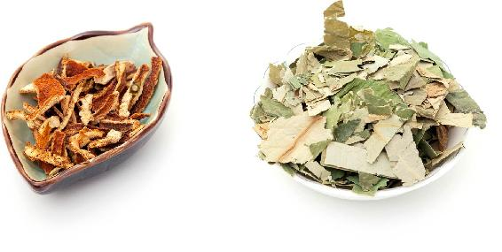
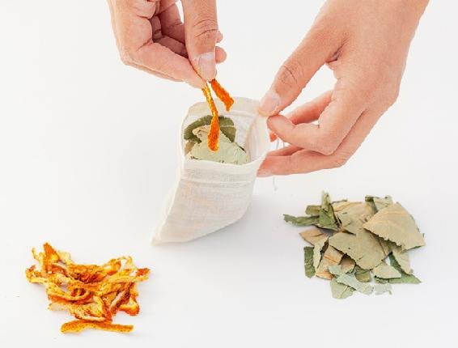
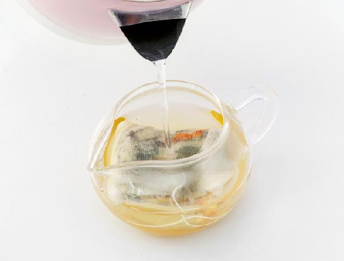
- 胃寒的人可以用炒荷叶代替生荷叶。
- 女性经期勿饮荷叶。
- 荷叶“刮油”的作用很强，营养不良、身体瘦弱的人不要多喝。
- 我属于寒湿型体质，喝了大半年的荷叶陈皮茶，体重从123斤降到了现在的108斤。
——29群读者
- 陈皮荷叶茶特别好，去年喝了三个月瘦了4斤，身体没有任何不适。
——清尘
- 减肥40天，已瘦12斤，每天都喝陈皮荷叶茶。
——小叶
- 用罗汉果煮水泡陈皮荷叶茶，我老公喝了一星期后，痰少了，气顺了，整个人也轻松了。
——3群读者
- 得知自己是寒湿体质后，开始用此茶饮。我非常执着地用了一个夏天，许久不见的朋友见面后的第一句是：“哟，瘦了！”更令我惊喜的是，10月底单位体检，原本左肾上的一个小囊肿没了。我还不相信，请医生再次检查确定，回答还是没有。回顾大半年来的饮食，唯一不同的是今年喝了荷叶陈皮茶。中医讲囊肿其实就是湿。陈皮燥湿化痰，荷叶提升阳气，两者结合化湿祛寒，给了我一个意外之喜！
——法图麦&杨
- 跟着老师顺时生活，喝减肥祛湿的荷叶陈皮茶，夏天喝姜枣茶，感觉体内湿毒慢慢在排出，并且瘦了30斤！多年来终于瘦下来了。
——桐桐^Day^
- 我的寒湿很重，妇科炎症也很重，而且便溏。喝了一个月的陈皮荷叶茶，感觉湿气少了很多。
——越来越好·王华
- 荷叶陈皮瘦身茶祛湿气的效果特别好，炎热的暑天，闷得头晕晕乎乎的，喝这款茶饮，头脑清爽，浑身轻松。
——静听花开
- 之前胸闷，去医院检查了好几次，都说没什么。喝陈皮荷叶茶一个多月后，胸闷自然地好转，脚上起的泡泡也变少了，人瘦了好多，也精神了。
——颖
- 喝了飞燕茶后，原来喉咙处的黏腻感好了些，便溏的现象也有所改善。
——cai
- 自己湿气特重，大便溏稀。原以为吃凉性的东西都会拉稀，其实不然。跟着陈老师的养生节奏，最近早上吃顺时粥，白天泡陈皮荷叶茶，再也不拉稀了。每天大便正常了，人也轻松舒服多了。以前每年住一次院，检查又没有大病，可能就是寒湿作怪。
——碧碧
- 我现在喝着姜枣茶和陈皮荷叶茶，饭量一点也没减，甚至比以前吃得还多，但是并没有胖，大便非常顺畅，感觉人比以前瘦了一圈。
——comilia
- 喝了飞燕茶，腰会不知不觉瘦下来，那种感觉妙极了。
——陈颖
- 给老公喝了三天的陈皮荷叶茶，晚上最明显的就是不怎么打呼了！
——我的世界
- 从4月25日开始喝荷叶陈皮茶，立夏后又坚持喝姜枣茶，昨天晚饭后称重竟然减了5斤，很开心。
——惜溪
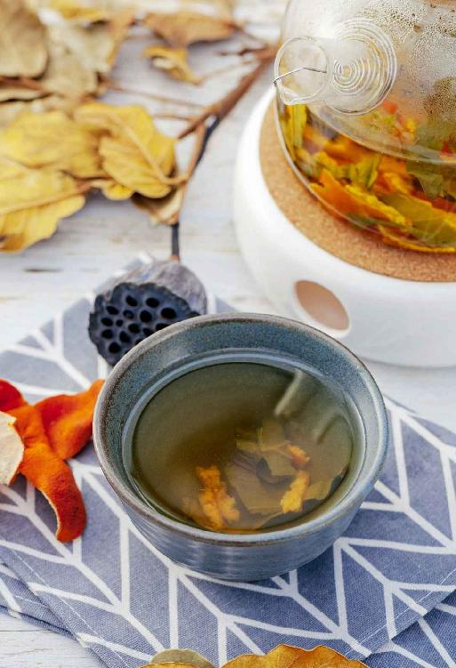
湿热型肥胖：吃得多、喝水多、痘痘多、便秘、怕热
喝消肿瘦身“楚腰茶”（冬瓜皮荷叶茶）
湿热型肥胖的人体内湿热比较重，面色发黄，吃饭出汗，食欲特别好，饿得特别快，经常口干舌燥想喝水，常发皮肤病。这类人减肥的重点在于清热祛湿。
楚腰茶
【原料】
干冬瓜皮120克、干荷叶60克。
【做法】
- 吃冬瓜时把冬瓜皮削下来，晾干备用；再取新鲜荷叶晾干。也可以到药店直接购买冬瓜皮、荷叶的干品。
- 把冬瓜皮和荷叶分成10份，分别装入10个茶包袋。
- 每次取1袋，用沸水冲泡，闷20分钟后饮用。
【功效】
- 降脂利水，消除身体水肿。
- 清热祛湿，减肥。
- 这款茶适合痰湿体质又有内热的人。
- 胃寒的人不要喝。
- 女性经期勿饮荷叶茶。
- 冬瓜荷叶茶效果很好，能祛湿排毒，从而达到减脂的效果。我坚持喝了半个月，肚子上的肚腩小了，身段更加苗条了。
——格桑
- 冬瓜荷叶减肥茶，我先生喝了这款减肥茶效果很好，减了20多斤。
——杨爱莲
- 我小腿很粗，很结实，用手都摸不着骨头，看起来像是肿着，其实不肿。去年喝姜枣茶，不是每天都喝。喝了一夏天荷叶陈皮冬瓜茶，自我感觉小腿没有那么结实了，也细了。
——33群读者
- 每天一个茶包带去办公室，不知不觉喝了一个月，昨天称体重发现竟然轻了4斤，肚子小了很多，在办公室坐一天腿也不怎么肿了。根据老师的方法对照自己的体质减肥，果然事半功倍。
——袷袢
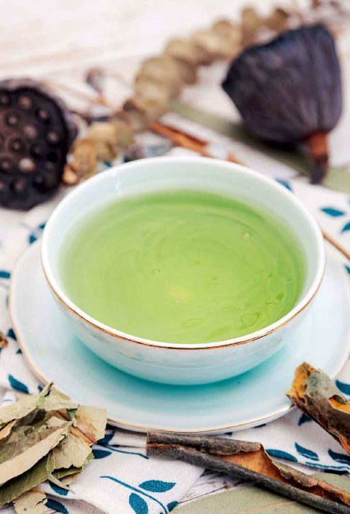
痰瘀型肥胖：血压高、血脂高、特别爱睡觉，
喝消脂瘦身“惊鸿茶”（山楂陈皮荷叶茶）
痰瘀型肥胖，由于体内长期有痰湿，造成瘀滞，容易形成高血压、高血脂、脂肪肝，皮下长脂肪瘤，特别爱睡觉。这类人减肥的重点在于化瘀、消痰、降脂。
惊鸿茶
【原料】
荷叶100克、生山楂（干品）100克、川陈皮300克。
【做法】
- 干荷叶撕成碎片，陈皮掰碎。
- 全部原料分成20份，分别装入20个茶包袋。
- 每次取1袋，沸水冲泡，闷30分钟后饮用，可以反复冲泡。
【功效】
- 降血压，降血脂。
- 顺气，化痰，化瘀，排毒。
- 有很强的降脂减肥功效。
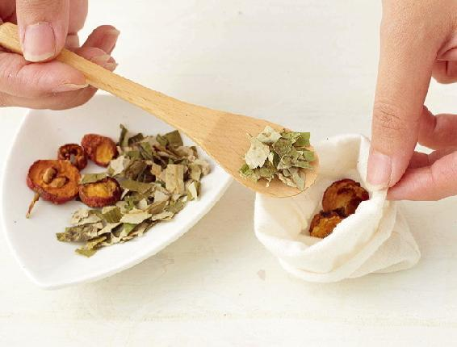

- 女性经期勿饮荷叶茶。
- 觉得山楂喝起来太酸的人，可以加入一个罗汉果同泡或煮水，味道更好，并能增强降脂减肥的效果。
- 这个配方挺好的，我老公应酬多肚子大，喝了一段时间肚子明显小了，减内脏脂肪效果挺好。
——跃跃
- 这款茶对痰湿肥胖效果特别好。我婆婆今年80岁，检查出高血脂、高血压，体重75千克，真的是喝水都胖。平时很困，爱睡觉，四肢沉重，痰多，易感冒，漏尿。坚持喝了一个多月，明显一天比一天瘦，原来虚胖脸都肥大，现在脸、腰都收紧了。一称体重减到65千克了，人也精神了，也不喘了。
——小杨
- 血脂高又不想吃药，近半年一直在喝惊鸿茶。时间允许的时候，习惯用煮花茶的办法煮了再喝。为降低山楂的酸口，有时会加罗汉果，春天时常加玫瑰。
——行者
- 老公昨天开始咳嗽，而且越咳越频繁。问他喉咙痛不，他说不痛；听他咳嗽，有点痰鸣音；没感冒，没上火。我猜想他是不是过年期间吃肉太多了，像小孩那样积食了，导致体内有痰湿。我用罗汉果煮水泡惊鸿荷叶陈皮茶给他喝，喝了两次，傍晚就不咳了，晚上安稳地睡了一觉。陈皮理气，荷叶祛湿，山楂消食，再加上罗汉果水润喉，对症下药效果特明显！
——敏
痰热型肥胖：肥胖、假性口渴、容易上火，
喝清火瘦身“绿袖茶”（陈皮荷菊茶）
痰热型的人痰湿重，有内热，又有假性口渴，平常容易上火。
绿袖茶
【原料】
川陈皮10个、干荷叶120克、菊花60朵。
【做法】
- 干荷叶撕成碎片，陈皮掰碎。
- 全部原料分成20份，装入20个茶包袋。
- 每次取1袋，沸水冲泡，闷20分钟后饮用，可以反复冲泡。
【功效】
- 化痰，祛湿热，调理假性口渴。
- 降脂减肥，适合容易上火的痰热型肥胖者。
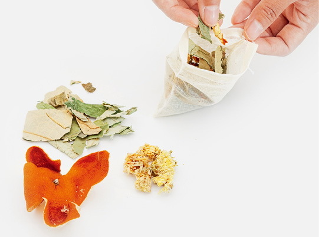
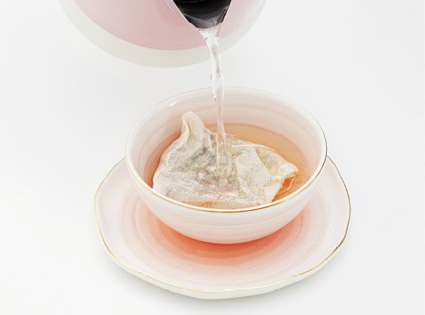
- 女性经期勿饮荷叶。
- 假性口渴就是经常感觉口渴但又喝不下去多少水。这种人不是真的缺水，而是痰湿阻碍了水液上行，导致口干舌燥。有这种情况的痰热型肥胖者可以常喝此茶。
最喜欢陈老师的四款瘦身除湿茶，因为它让我们全家人的身体都祛除了痰湿，让我们都瘦下来了，大便也更通畅了，人都轻盈了一些！
——口子哥
气虚型肥胖：虚胖、爱出汗、爱感冒、腹部松软、腿常水肿，喝“补气瘦身茶”（黄芪茯苓水）
气虚型肥胖的人虽然看起来胖，其实体重并不重，身上的肉十分松软，属于典型的“虚胖”。这种体质的人爱出汗，抵抗力差，不能通过节食来减肥，必须补，减肥的重点在补气。
黄芪又称小人参，它的作用与人参相似，都是补气良药。但人参补的是元气，作用迅猛，不能轻易使用。而黄芪补的是脾肺之气，比较温和，效果却很强大。
补气瘦身茶
【原料】
黄芪300克、茯苓150克。
【做法】
- 把黄芪和茯苓一起放在锅里，用清水泡1小时。
- 大火煮开，再用小火煮半小时，滗出药汁。
- 重新加水再煮两次，水开后煮半小时，滗出药汁。
- 把三次的药汁混合在一起倒入锅内，煮到浓缩，放入冰箱冷藏。
- 每天取大约1/10放入随身杯，加开水调稀饮用。
【功效】
- 祛湿，补气，减肥，适合气虚型肥胖。
- 消除下肢水肿，预防大腿粗胖。
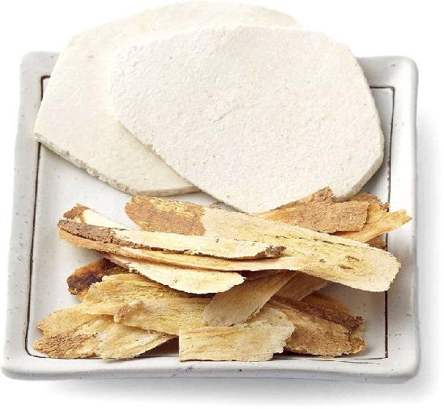
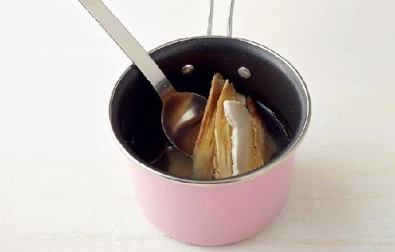
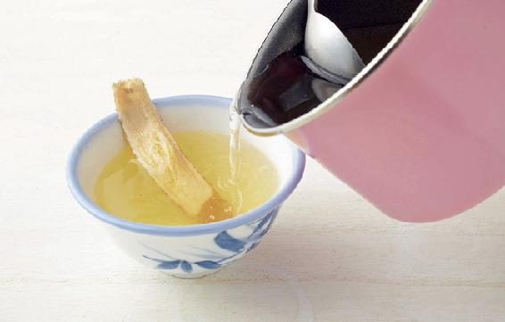
- 感冒、咳嗽、痰多时不要喝。
- 每次饮用时还可以加入10克枸杞子，增强调节内分泌的作用。
读者评论
- 喝姜枣茶，吃茯苓黄芪粥，接着吃雪耳，不美都难。今年见到同事朋友，都说我变年轻、变漂亮了。
——文文
- 喝了黄芪茯苓粥，大拇指上的火疖消失了，脸上黄色的皮肤变白了！
——海的玫瑰
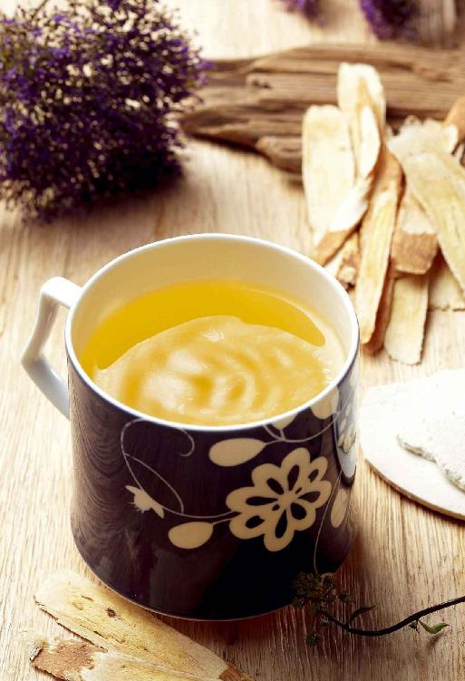
气滞血瘀型肥胖：全身不胖腹部胖、脸色暗沉，喝“柠檬胡椒茶”
有一种“隐形肥胖”，人很瘦却有脂肪肝，或是只有小腹胖。这种肥胖跟肝气郁滞和血瘀有关系。这类体质的人脸色和唇色会比较暗，减肥的重点在理气活血。
这款茶饮里的胡椒粉很关键，能增强活血瘦身的效果，还有暖肾的作用。胡椒能够起到引火归原的作用，把人体内的火引到它该去的地方，发挥它该发挥的作用。柠檬皮是理气的，与胡椒粉搭配能很好地理气活血。
柠檬胡椒茶
【原料】
新鲜柠檬1个、胡椒粉2克、红糖适量。
【做法】
- 把柠檬放在加面粉的清水里浸泡10分钟，清洗干净。
- 将柠檬切成两半，把柠檬汁挤入杯中，再把挤过汁的柠檬切成片也放入杯中。
- 加入胡椒粉、红糖，冲入温水饮用。
- 第二次冲泡时，改为沸水冲泡，闷5分钟后饮用。可以反复冲泡多次。
【功效】
- 调理月经不调。
- 理气活血，消除胃部胀气。
- 排毒瘦身，适合气滞血瘀型肥胖。
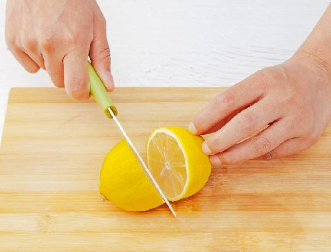
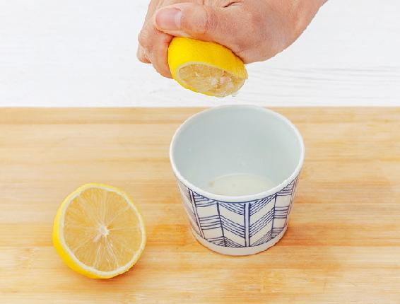
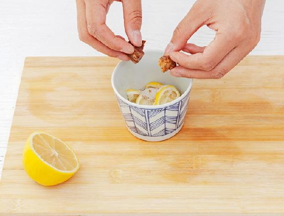
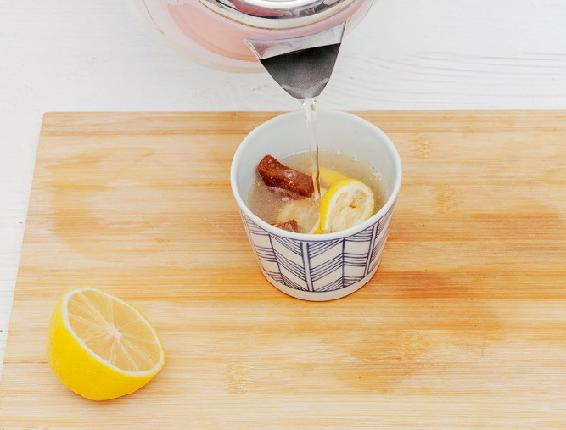
- 第一次冲泡的时候，一定要等水温降下来再放柠檬片，否则会破坏新鲜柠檬的营养。
- 柠檬可能会使某些人产生光敏反应，喝过之后不要在太阳下暴晒。
- 选胡椒的时候，白胡椒散风寒的作用更好，黑胡椒暖胃的作用更好。
读者评论
- 每天半个柠檬（一个太酸），才喝了一个星期，就感觉肚子没那么大了，胃还特别舒服。还有从去年十月份开始过午不食（偶尔吃一顿），已经减了10斤了。
——源缘
- 柠檬+胡椒+红糖=减掉赘肉20斤。
——染灰的胭脂
- 都说胖子不怕冷，我却是怕冷的胖子。看了允斌老师的书才知道原来是肝气郁滞导致的肥胖，需要理气。胖子都很懒，这个茶方因为很简单，所以我才尝试了下，断断续续喝了一个月，小肚子小了好多，最明显的还是唇色好了很多，没有之前那么暗沉了。
——小妞妞
- 生完二宝后就一直没有瘦下来，各种方子都用了。柠檬胡椒茶喝了五天后皮肤好了，肚子显著变小，现在又加上老师教的“过五不食”，我已经成功瘦下来了。
——林
- 伏案工作经常头胀，脾胃消化慢，喝了柠檬胡椒茶感觉好了很多。这款茶帮助活血化瘀，人的气色也好了很多。
——明～贵州
青春期肥胖：青少年皮肤油性爱长痘，便秘，有时咳嗽，喝“抗痘消痰茶”（果菊清饮）
青春期肥胖如果是胖在皮下脂肪，不需要专门减肥。但是现在的青少年由于学业繁忙、饮食不节，很多孩子内脏脂肪偏高，皮肤油腻，经常长青春痘，还便秘。这类人可以常饮本书前面提到的果菊清饮来消脂。
抗痘消痰茶
【原料】
罗汉果5个、鱼腥草200克、菊花20克。
【做法】
- 罗汉果全部压破，和鱼腥草、菊花一起分成20份，分别装入20个茶包袋。
- 每次取1袋，闷泡20分钟后饮用。有条件可将罗汉果先煮水，再冲泡鱼腥草和菊花。
- 一日3袋。
【功效】
- 调理有黄痰的慢性咳嗽。
- 消炎，排毒，清肺热。
- 调理青春痘。
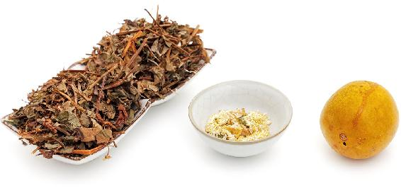
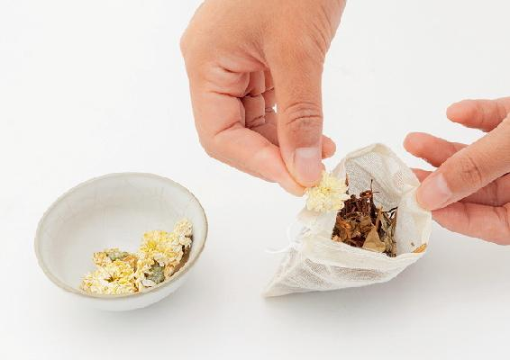
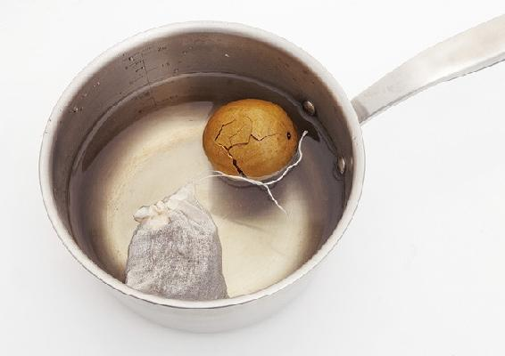
- 大宝10岁了，流鼻血止不住。用了一包果菊清饮，一连几天再也没流鼻血。关键是这个茶甜甜的，孩子能接受。今天继续喝果菊清饮。
——默
- 今天孩子起床后咳嗽带痰音，煮了罗汉果鱼腥草水，出发前喝了几口，下午回家已经不咳嗽了，也没有痰音了，真是太棒了！
——小蛋饺子妈妈事多
- 昨天干咳几声，今天煮了果菊清饮，一大早喝了一杯，一天都没见咳嗽，用了老师的方子立马见效。
——weijuan
- 前两天嗓子有点不适，除了偶尔打几个喷嚏没有别的不舒服。昨晚睡觉前喉咙疼得厉害，今天早上煮了果菊清饮，喝了三杯左右。之前嗓子有痰，咽不下去又吐不出来，现在感觉痰明显少了，疼痛感也轻了。
——小慧
- 我昨天牙疼得想死，半边头都疼，牙龈肿得像个车厘子，连带着耳朵也疼，脖子也有点肿。赶快熬了个罗汉果，加了一大把鱼腥草和几朵白菊，喝了两杯，睡下了。半夜就感觉牙龈不肿了。早上起来，除牙还有些微痛外，别的症状全都消失了。早上又把昨晚没喝完的鱼腥草水热来喝了半杯，现在牙完全不疼了。
——欢喜
- 前段时间天干物燥，上火了，嗓子痛，牙也痛！于是想起老师的“果菊清饮”，煮水喝了，下午就好些了。第二天又煮了一包，全好了！两天搞定，实在是太赞了！过了两天，孩子放学回来也出现了嗓子痛的症状，马上给她也煮了一包。孩子开始以为是苦的，不愿喝，告诉她很甜，她立马端碗喝了起来，喝完就说：“妈妈，好喝！嗓子舒服多了！”第二天早上起来，她的嗓子已经不痛了！还主动催我去给她煮水喝！
——素颜
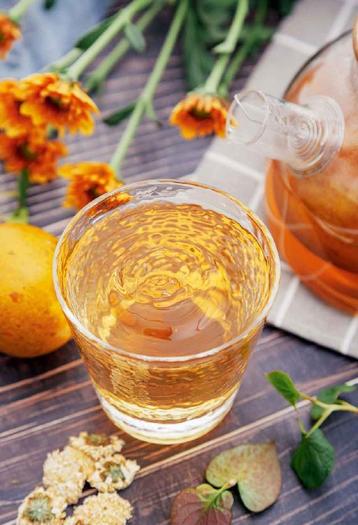